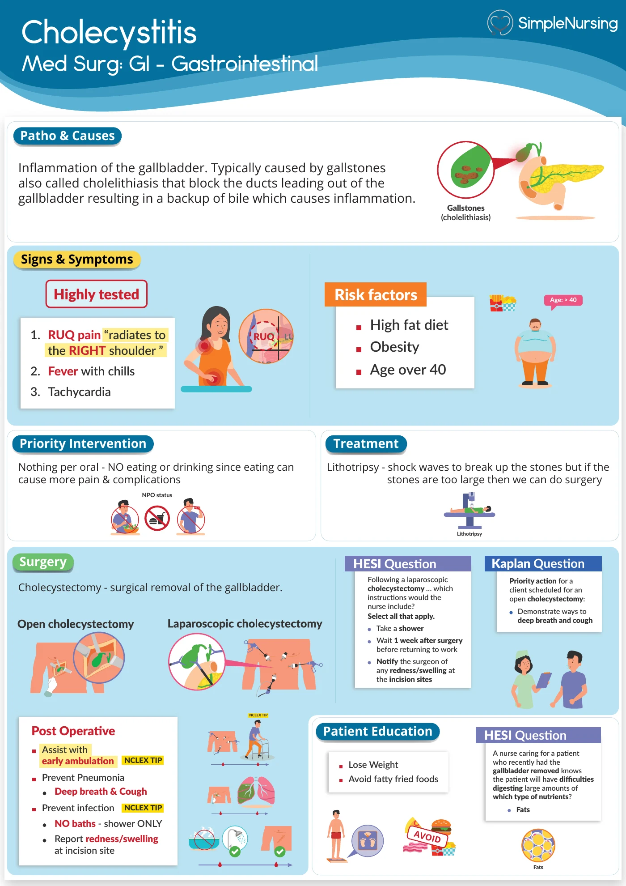
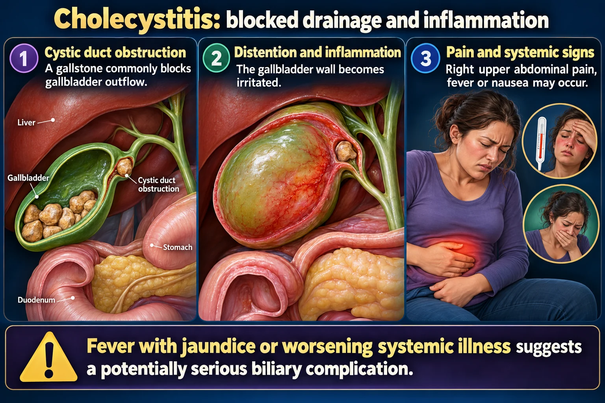

Case 10J · Ms. Ortiz, a 40-year-old obese mother of four, has RUQ pain radiating to the right shoulder after fried food and a positive Murphy's sign. The most likely diagnosis is:
Answer
Cholecystitis
Reasoning
RUQ pain to the right shoulder after fatty food + positive Murphy's sign = cholecystitis; she fits the classic 'F' risk profile.
Why the other answers do not fit
- Pancreatitis
- Appendicitis
- Hepatitis A
Shared reasoning for choices without a separate note: RUQ pain to the right shoulder after fatty food + positive Murphy's sign = cholecystitis; she fits the classic 'F' risk profile.

